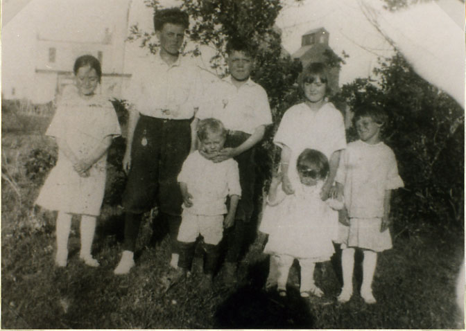

| Luella Evelyn Wogsland was born 28 March 1910 to Florence and Andrew Wogsland. She married a man named Hand and together they had one child. Luella died August 9th, 1976. |
 The Wogsland Children in Walum, ND Florence, Cliff, Ray, Alberta, Luella Vernon, Ruth |